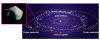
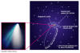
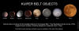

Comets and Asteroids
Video
This
video covers the big ideas on asteroid, comets, and meteors,
Comets
- Comets are basically "dirty snowballs" that evaporate as they approach
the Sun.
- Cometary nuclei consist mostly of dust particles trapped within a frozen
gas mixture of methane, ammonia, and ordinary water.
- The density of these nuclei is roughly 0.1 g/cc—1/10th the density of
water—similar to that of loosely packed ice.
- Comets have typical
masses = 10-11 of Earth. They are made of primitive material and
provide clues to the early composition of the original "solar nebula".
- There are two major reservoirs of comets:
Kuipier Belt and Oort Cloud.
- The Kuiper Belt is made of planetesimals that formed beyond
Neptune's orbit and never accreted to form a planet.
- The Oort Cloud is made of planetesimals believed to have formed in
the outer solar system that were flung into distant orbits by encounters
with the jovian planets.
- Comets are seen in the sky as diffuse, luminous patches, often with
long
tails.
- Comets actually can have two visible tails, a plasma tail and a dust
tail, both of which can be several AU's in length and generally trail the
comet.
- The plasma tail consists of gas pushed away from the coma (the comet's
dusty atmosphere) by the solar wind, which causes the tail to point directly
away from the Sun.
- The particles in the plasma tail are affected by the solar wind
because they are electrically charged.
- The dust tail consists of much bigger particles which are pushed away
from the coma by the Sun's radiation pressure (i.e., the pressure
generated by sunlight). This tail also generally points away from the Sun
but is a bit more sluggish to respond and thus has a gentle curve somewhat
along the path of the comet.
- The particles in the dust tail do not have an electric charge and,
unlike the ions in the plasma tail, are not affected by the solar wind.
- The thinner, longer plasma tail forms a straight line extending from
the comet. The shorter dust tail is curved slightly.
- Comet tails get longer and more impressive as the comet gets closer
to our Sun.
- With each pass by the Sun, some of the comet's ice melts and it sheds a
large amount of debris. Eventually, these comets will pass by the Sun so
often that they either evaporate away or become covered in a think mantle of
insulating dust that prevents further evaporation. The debris left
behind continues to orbit the Sun and can produce a meteor shower when the Earth runs into the orbit
of the comet, even after the comet has completely disintegrated.
Asteroids
- Asteroids are often referred to as "minor planets".
- The majority of these giant rocks occupy a belt between the orbits of
Mars and Jupiter (~2 AU) where there is enough space for a planet.
- There is also a smaller reservoir within the orbit of Jupiter (Trojan
asteroids).
- The first one discovered was in 1801, named Ceres. Ceres is about 1000
km in diameter and one of the largest asteroids.
- There are now thousands known and there are estimated to be about
100,000 out there in interplanetary space.
- There are only about 6 that are larger than 300 km across; most are much
smaller (< 10 km).
- Most do not have enough mass to be spherical.
- 3 types: rocks, iron/nickel, carbon rich.
- Tidal forces exerted by Jupiter likely kept these bodies from forming into a planet in the early
solar system.

Kuiper Belt and Oort Cloud
- There are two comet reservoirs: the Kuiper Belt and the Oort Cloud.
- The Kuiper Belt lies just beyond the orbit of Neptune (30-100 AU's).
- The Oort Cloud is a sphere of about 1012 comets, ~
50,000 AU from the Sun.
- Sometimes the Oort cloud is perturbed by a passing star which sends some
comets heading toward the inner Solar System.
- Periodic comets are bound to the Sun and orbit in very elliptical
orbits. They spend most of their existence very far from the Sun and only a
short time near it (when the tail develops).
- So far there have been over 60 Kuiper Belt Objects (KBO's) discovered
here and it is estimated that there may be as many as over 30,000 such icy
worldlets.
- As of Aug 2006, Pluto is now classified as a large KBO, as well as a
dwarf planet.
- The list of KBO's is growing but the largest
ones include Pluto, Eris, Makemake, Sedna, and Quaoar.


Comet orbits
- Comets are often classified according to the length of their orbital
period; the longer the period, the more elongated the ellipse.
- Short-period comets are generally defined as having orbital periods
of less than 200 years. They usually orbit more-or-less in the ecliptic
plane in the same direction as the planets. Their orbits typically take
them out to the region of the outer planets (Jupiter and beyond) at
aphelion. For example, Comet Halley's aphelion is a little way beyond
the orbit of Neptune. At the shorter extreme, Comet Encke has an orbit
which never places it farther from the Sun than Jupiter. Short-period
comets are further divided into the Jupiter family (periods less than 20
years) and Halley family (periods between 20 and 200 years).
- Long-period comets have highly eccentric (elongated) orbits and
periods ranging from 200 years to thousands or even millions of years.
Their orbits take them far beyond the outer planets at aphelia, and the
plane of their orbits need not lie near the ecliptic.
- Some comets show up only once. These are called single-apparition
comets and are similar to long-period comets, but have parabolic or
hyperbolic trajectories which will cause them to permanently exit the
solar system after passing the Sun once.
- Based on their orbital characteristics, short-period comets are
thought to originate in the Kuiper belt, whereas the source of
long-period comets is thought to be the far more distant spherical Oort
cloud. Occasionally, the gravitational influence of the outer planets
(in the case of Kuiper Belt objects) or nearby stars (in the case of
Oort cloud objects) may throw one of these bodies into an elliptical
orbit that takes it inwards towards the Sun, to form a visible comet.
Unlike the return of periodic comets whose orbits have been established
by previous observations, the appearance of new comets by this mechanism
is unpredictable.
- Comets in the Oort Cloud are not considered periodic because they
never come close to the Sun and are therefore never visible.
- Since their elliptical orbits frequently take them close to the
Jovian planets, comets are often subject to further gravitational
perturbations. Short-period comets display a tendency for their aphelia
to coincide with a giant planet's orbital radius, with the Jupiter
family of comets being the largest. It is clear that comets coming in
from the Oort cloud often have their orbits strongly influenced by the
gravity of Jovian giants as a result of a close encounter. Jupiter is
the source of the greatest perturbations, being more than twice as
massive as all the other planets combined, in addition to having the
greatest orbital speed among the giant planets. These perturbations may
sometimes deflect long-period comets into shorter orbital periods
(Halley's Comet being a possible example).
Page last modified: